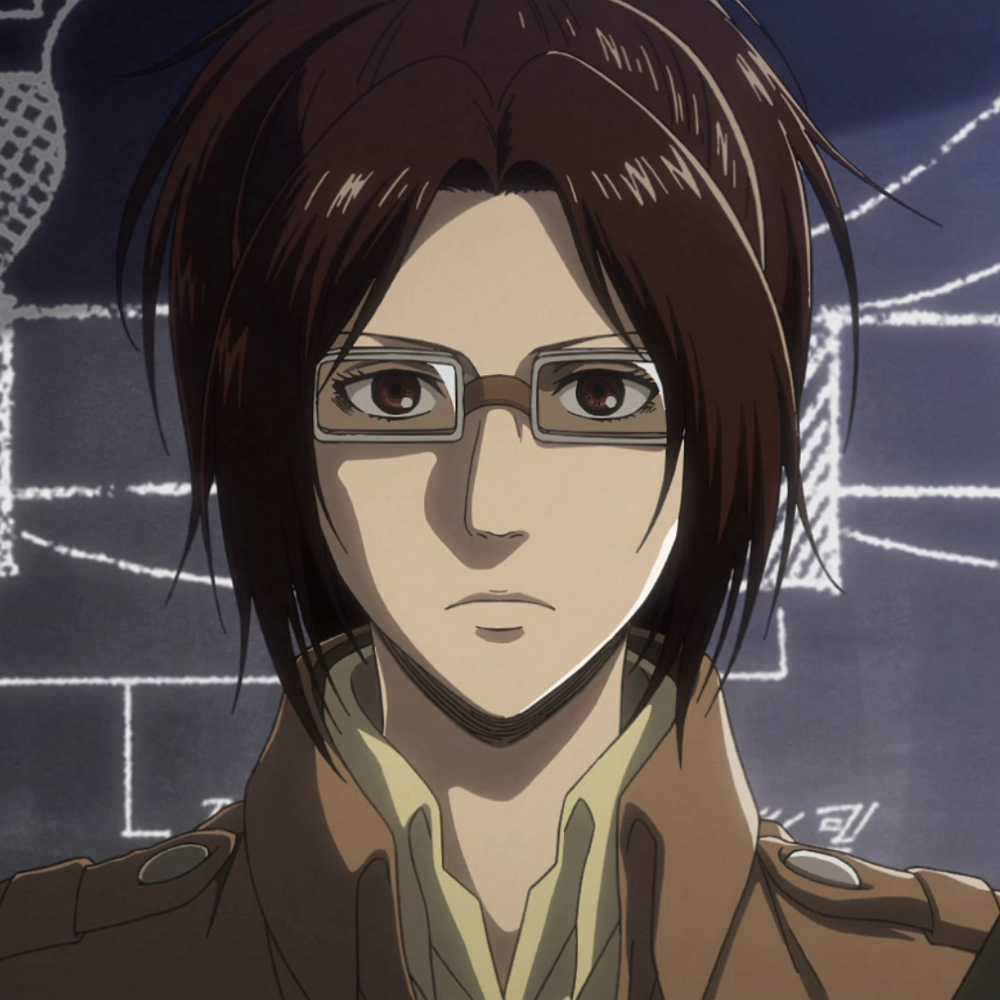

Ханджи Зое
{kind=link}
Ханджи Зое – бывший лидер отряда Разведкорпуса, а также главный исследователь. После смерти Эрвина Смита заняла его место и стала 14-ым Главнокомандующим Разведкорпуса.
Внешность
Ханджи Зое cреднего роста (170см), стройного телосложения, с каштановыми волосами, собранными в высокий конский хвост с прядями, которые обрамляют её лицо. У неё карие глаза, нос с горбинкой. Во время взрыва Колоссального титана в Шиганшине повредила левый глаз, из-за чего теперь носит черную повязку.
{kind=link}
Во время боевых действий носит квадратные очки в толстой оправе из-за очень плохого зрения, в повседневности носит очки в очень тонкой оправе, закреплённые на её голове с помощью полос ткани. Не считая стандартной формы Разведкорпуса, обычно носит желтую рубашку. Как командующий Разведкорпусом, носит боло галстук. Из-за её очков Леви называет Ханджи «очкастой» или «четырехглазой».
Личность
Ханджи открытая, доброжелательная, обладает чувством юмора; некоторые считают её милой. Она фанатично интересуется природой гигантов, о которых может рассказывать бесконечно. Зое болтушка. В своих кругах считается безумной, однако может проявить завидную выдержку и решимость, хорошо продумывает тактику боя с минимальными потерями людей. Является создателем специального оружия захвата цели, которое смогло обездвижить Женскую Особь.
Бывший капитан Разведкорпуса. Ради изучения природы титанов проводила эксперименты над ними, очень страдая если нужно было причинить подопытным боль. Именно она провела эксперименты, в ходе которых выяснилось, что титаны слабеют без солнечного света и что кроме затылка у них слабых мест не имеется. Утвердилась в мысли, что существование титанов — не природное явление.
Ключевые черты характера: прагматик, реалист, логик, тактик и стратег; сумасброд без инстинкта самосохранения. Часто рискует жизнью ради товарищей или очередного эксперимента (поэтому рядом с ней всегда человек, который вовремя вытащит её голову из пасти титана), чудачка с чёрным чувством юмора; умна, решительна и сильна, прирожденный командир; временами чувствительна и эмоциональна. Обыкновенно пребывает в хорошем расположении духа. Любит подшучивать над окружающими.
История
Сначала Ханджи уезжает из Троста, отправляясь в 39-ю экспедицию за стены. Её заботит неординарное поведение аномальных гигантов, и она очень хочет захватить одного такого. Эрвин Смит отказывается жертвовать солдатами ради этой цели, чем огорчает Ханджи. Но через некоторое время вблизи лагеря замечают гиганта, Ханджи самовольно отправляется к нему, пытаясь заставить следовать за ней. Эрвин приказывает Леви помочь Ханджи, и в итоге его отряд убивает гиганта в лесу. Но вместе с тем солдаты обнаруживают тело и дневник Ильзы Лангнар. После его изучения Эрвин всё же выдаёт майору разрешение на поимку гигантов.
Также известно, что когда-то она ненавидела титанов и желала истребить их, но однажды, когда Ханджи «казнила» 3-х метрового Гиганта, она заметила его неестественную воздушность и странную пропорциональность тела, после чего всерьёз заинтересовалась строением и природой их тел, позабыв о ненависти.